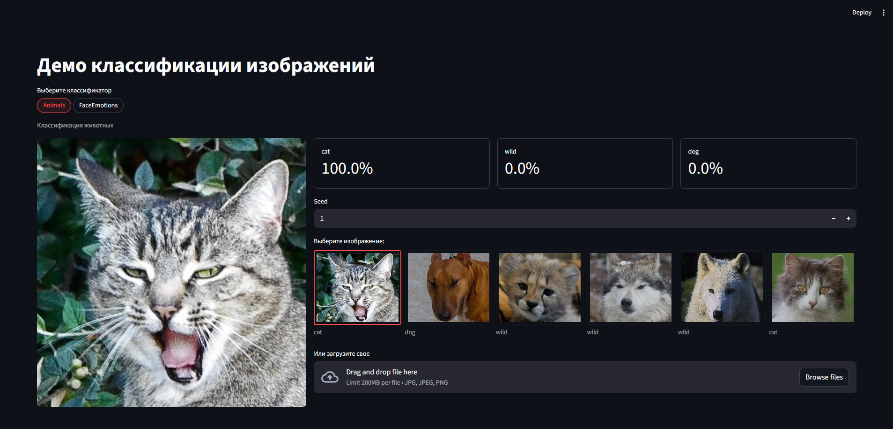

Данные и baseline
Проверяю разметку, классы и качество набора, чтобы задать внятную стартовую точку.

Разрабатываю end-to-end пайплайны на PyTorch для Computer Vision и прикладного ML: semantic segmentation, image classification, inference и demo-приложения. Сравниваю архитектуры, улучшаю метрики и довожу решения до результата, который можно быстро проверить на реальных примерах.
Санкт-Петербург · удалённо / офис / гибрид · релокация по РФ и СНГ
Мне интересны задачи Machine Learning и Computer Vision, где важно не только получить метрику, но и понять, за счёт чего модель работает лучше или хуже.
Поэтому в проектах я иду от данных и baseline к воспроизводимому обучению, сравнению архитектур, анализу слабых мест и demo-проверке на реальных примерах.
Проверяю разметку, классы и качество набора, чтобы задать внятную стартовую точку.
Собираю training pipeline с понятной конфигурацией, checkpoints и фиксацией экспериментов.
Сравниваю архитектуры и настройки, ищу слабые места и проверяю гипотезы экспериментами.
Упаковываю результат в demo или inference-сценарий, который можно быстро показать и проверить.

Сегментация городских сцен на Mapillary Vistas с фокусом на редкие и мелкие классы.
Собрал end-to-end пайплайн: polygon JSON → segmentation masks → dataset → training → evaluation → Streamlit demo. Сравнил U-Net, DeepLabV3+ и SegFormer, отдельно анализировал качество на редком классе animal и улучшал результат через эксперименты с разрешением входа.

Практический classification-кейс с обучением моделей и сборкой inference-пайплайна для двух сценариев: Animals и Face Emotions.
В проекте есть отдельный Streamlit demo, где можно переключать классификатор, загружать своё изображение и быстро проверять результат на примерах из датасета.
PyTorch-стек для CV-задач, инструменты для inference/demo и базовый data/NLP-набор.
Помимо ML-проектов, у меня есть опыт цифровых сервисов, Python-автоматизации, визуальной коммуникации и проектной работы.
Разрабатываю проекты в Computer Vision и прикладном ML: segmentation, classification, inference, model comparison и demo-приложения. Главный кейс — Mapillary Vistas segmentation с кастомным dataset, сравнением архитектур и улучшением качества на редком классе animal.
Обучаю школьников цифровым визуальным инструментам и основам проектной работы. Этот опыт усиливает мою способность объяснять сложные вещи через понятную структуру и практику.
Работаю с цифровыми и образовательными проектами, сервисами на базе чат-ботов и Python-автоматизацией. Понимаю, как превращать техническое решение в понятный пользователю инструмент.
МФТИ, профессиональная переподготовка, Data Science. База в Python, классическом ML, deep learning и прикладных проектах.
Ищу команду, где смогу расти в задачах Computer Vision и прикладного ML и приносить пользу через разработку, сравнение и улучшение ML-решений, а также через аккуратную инженерную упаковку результата.